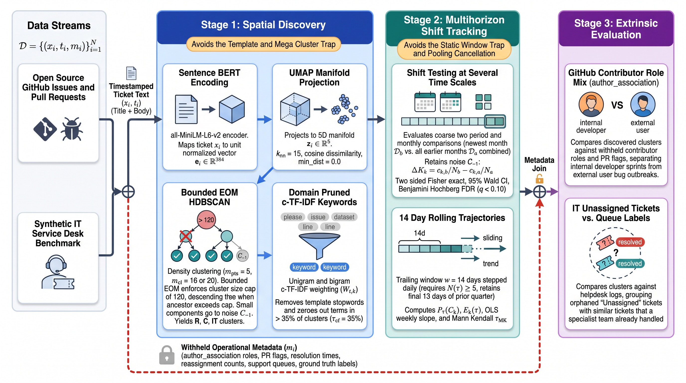
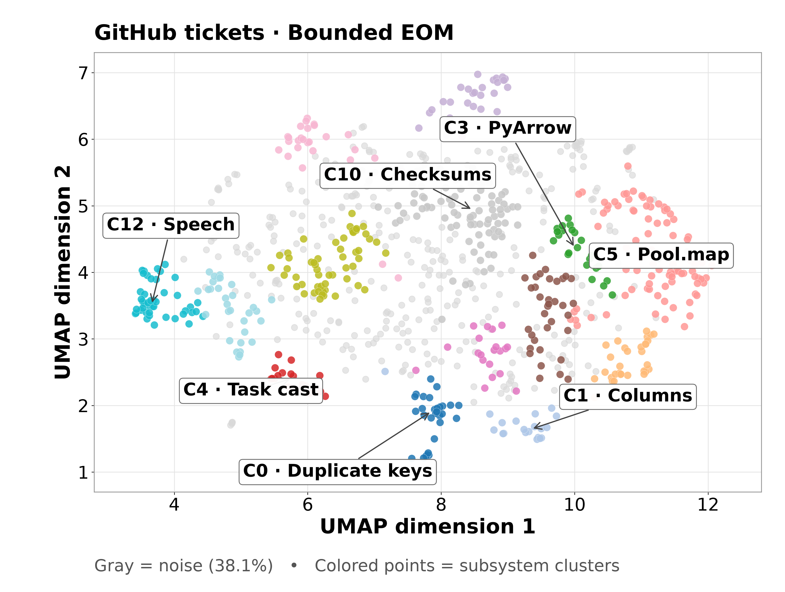
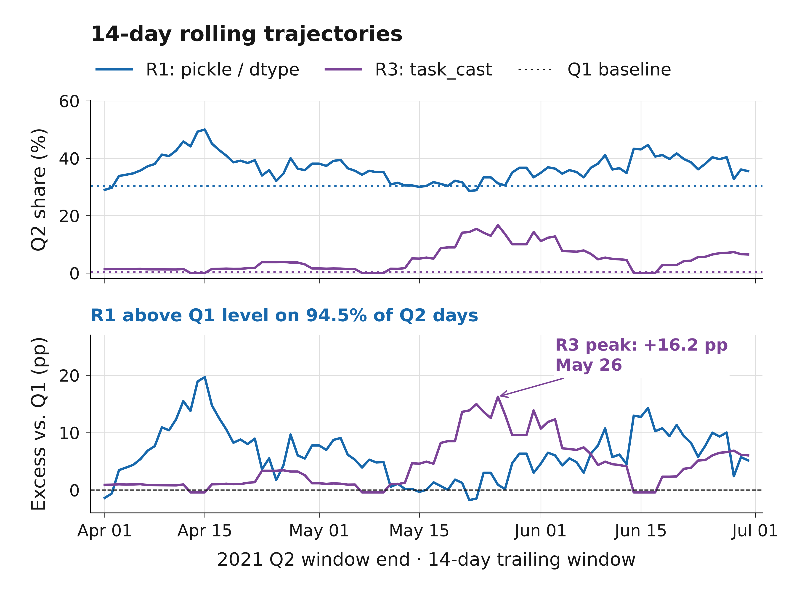
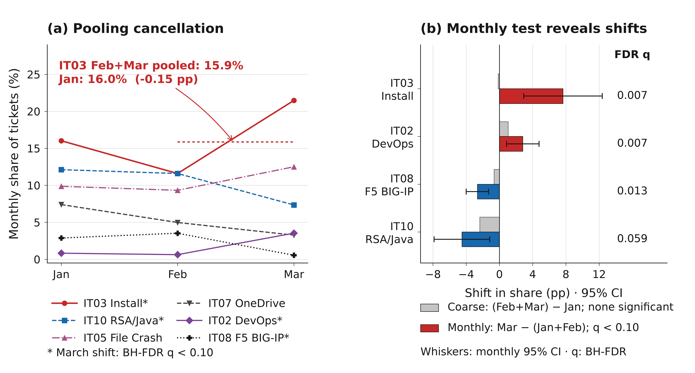
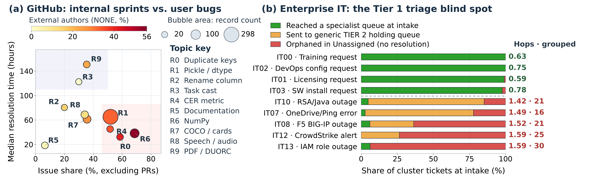

Discover, Track, and Validate Without Label Leakage
All operational metadata (GitHub author roles, PR flags, MTTR, IT support queues, reassignment hops) is strictly withheld during Stages 1 and 2 and used only post hoc in Stage 3.
Manifold Projection & Bounded EOM
Encode tickets with all-MiniLM-L6-v2 (384D), project to 5D via cosine UMAP, cap HDBSCAN cluster size at M_max = 120 (~14% workload), and extract domain-pruned c-TF-IDF descriptors.
Multi-Horizon FDR & Rolling Windows
Run two-sided Fisher exact tests with Benjamini–Hochberg FDR control (q < 0.10) across quarterly and sequential monthly splits, paired with 14-day trailing rolling trajectories and Mann–Kendall τ_MK.
Withheld Operational Metadata
Verify discovered clusters against unseen GitHub contributor roles (MEMBER/CONTRIBUTOR vs. NONE) and enterprise IT queue logs (15 specialist teams & 314 orphaned tickets).

Breaking the 298-Ticket Mega Cluster & Coherence Mirage
Explore all 881 GitHub tickets in 2D UMAP space. Toggle between Bounded EOM (C0–C13) and Unbounded EOM (R0–R9), or inspect why automated C_v word coherence misleads topic model selection.
Hover any ticket to inspect its GitHub issue ID, title, cluster assignment, quarter, and author status. Bounded EOM keeps 9 clusters untouched (ARI = 1.000) while splitting the 298-ticket R1 parent into 5 subsystems (C5 Pool.map, C7 Arrow Index, C2 Tensor Cast, C3 PyArrow ABI, C8 Tokenizer).
Notice the inversion: LDA achieves the highest C_v coherence (0.948 SWE / 0.905 IT) by grouping boilerplate tokens, yet suffers negative 5D Silhouette (-0.225) and lowest IT purity.
Continuous Rolling Plateaus vs. Sprints & Pooling Cancellation
Coarse period comparisons conflate chronic plateaus with completed sprints (GitHub Q2) and cancel opposing monthly swings (Enterprise IT Q1).
R1 (Serialization) stays above its Q1 baseline on 94.5% of Q2 days (mean +6.29 pp, flat slope -0.06 pp/wk). R3 (Task Cast) stays dormant in April, peaks at 16.7% on May 26, and resolves in June.
In IT-03 (Installation), a Feb dip (-4.43 pp) and Mar surge (+9.88 pp) cancel 99% of variation when pooled (Coarse Δ = -0.15 pp, 0/14 FDR shifts). Sequential monthly testing rescues 4/14 significant shifts.
Exposing Internal Sprints & Grouping 237 Orphaned Incidents
Validating text-only clusters against withheld operational metadata separates genuine user bug outbreaks from internal PR sprints and surfaces Tier 1 helpdesk blind spots.
Bubble size = cluster count; color = external author share (author_association == NONE). R3 has 0.0% external users (75% core members), confirming a maintainer sprint, while R0, R1, R6 draw 33–54% external reporters.
Routine requests (IT-00–IT-03, teal) map cleanly with 0.59–0.78 hops. Outage clusters (IT-07, IT-08, IT-10, IT-12, IT-13, red) suffer 1.42–1.59 reassignments and leave 63.6–93.8% orphaned unless grouped by failure signature.
High-Resolution Showcase Assets & Citation
All figures below are reproduced directly from saved project matrices and embeddings; click any panel to inspect at full resolution.

1 · Break the Mega Cluster
Bounded EOM splits 298-ticket R1 into 5 subsystem clusters while keeping 9 sibling clusters intact.

2 · Plateaus vs. Sprints
14-day rolling trajectories across 91 Q2 days separate chronic R1 (94.5% days elevated) from May sprint R3.

3 · Pooling Cancellation
Monthly IT share breakdown rescues 4 FDR-significant shifts missed by coarse two-period pooling.

4 · Operational Payoff
Withheld role checks confirm R3 is 0% external and group 237/314 (75.5%) orphaned IT tickets.
git clone https://github.com/Control707/unsupervised-incident-triage.git cd unsupervised-incident-triage pip install -r requirements.txt # Run the 90 temporal & trajectory unit tests python -m unittest discover -s tests -v # Open the executed showcase notebook jupyter lab Incident_Triage_End_to_End_Showcase.ipynb
@misc{sherif2026unsupervised,
title = {Overcoming Template Mega Clusters and Pooling Cancellation in Unsupervised Incident Triage},
author = {Sherif, Zakaria and Cosereanu, Nicholas and Barker, Wyatt},
year = {2026},
note = {Preprint, College of Computing and Software Engineering (CCSE), Kennesaw State University},
url = {https://github.com/Control707/unsupervised-incident-triage}
}